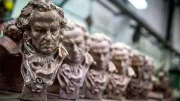
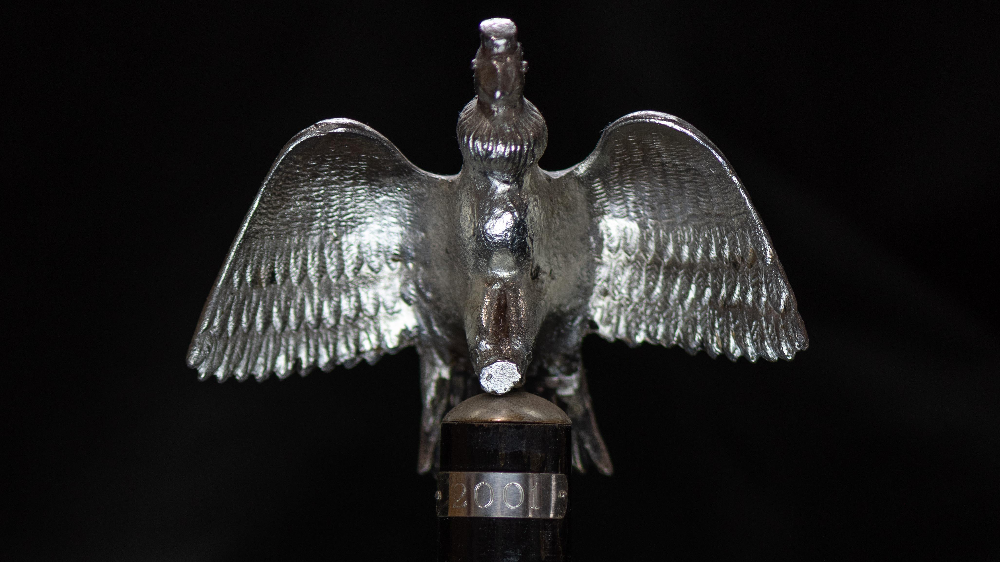

Premio Óscar (2010)
Ganadora del Óscar a Mejor Película Extranjera, superando a favoritas como *La cinta blanca* y *Un profeta*.

Detalles interesantes y reconocimientos de la película
Ganadora del Óscar a Mejor Película Extranjera, superando a favoritas como *La cinta blanca* y *Un profeta*.
Ganó el Goya a Mejor Película Hispanoamericana en 2010.
Obtuvo numerosos premios Cóndor de Plata, incluyendo Mejor Película, Mejor Director, Mejor Actor (Ricardo Darín) y Mejor Guion.
La película está basada en la novela *La pregunta de sus ojos* de Eduardo Sacheri, quien también colaboró en el guion.
La famosa escena del estadio de fútbol fue filmada con un plano secuencia digital de más de 5 minutos. Es considerada una de las más complejas del cine argentino.
La película fue distribuida en más de 30 países y recibió elogios tanto del público como de la crítica internacional.